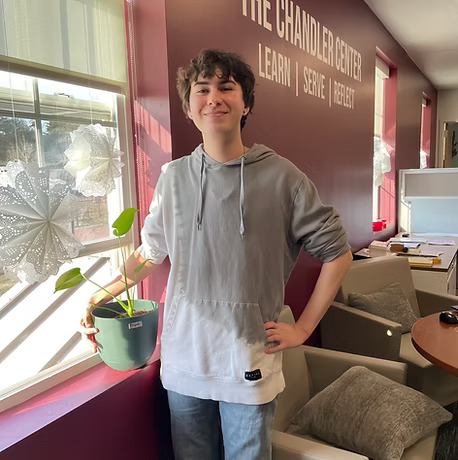
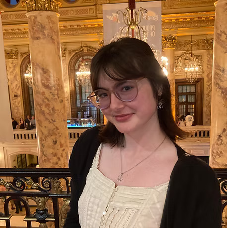

SNHU - The Chandler Center
2500 North River Road
Manchester, NH 03106 b.gentry@snhu.edu
(603) 665-2639
BEN GENTRY - DIRECTOR
Though he recently earned his Ed.D. in Educational Leadership at Southern New Hampshire University, Ben Gentry remains a lifelong learner dedicated to inspiring a passion for learning in others. He currently works as the Assistant Director for College Access and Strategies at SNHU where he runs the Breakthrough Manchester College-Bound program, serving both highly motivated, under-resourced high school students on their path to post-secondary success and aspiring, pre-professional college students on their path to leadership and teacher development.
When SNHU announced its partnership with Breakthrough Manchester in the summer of 2016, Ben had just finished his student teaching of ninth and tenth grade English for the Master of Education and secondary teacher certification. Jumping at the opportunity, he has worked to build out the Breakthrough Manchester College-Bound program at SNHU which now serves 105 high school students and 21 college students each year, and boasts a network of over 100 student and/or advisor alums!

BEAU SPILLANE - AMERICORPS VISTA
Beau Spillane is a Campus Compact AmeriCorps VISTA who is completing one year of service with Breakthrough Manchester. In collaboration with Breakthrough students, staff, and families, he is working to evaluate, strengthen, and potentially expand programming. In spring of 2024, he graduated from Southern New Hampshire University with a Bachelor of Arts in Politics & Global Affairs. Beau is new to Breakthrough, just having started his VISTA year in July, and is incredibly excited to be joining the team!

MYA DOWD - PROGRAM ASSISTANT
Mya is in her second year at Southern New Hampshire University, majoring in Justice Studies with a concentration in Law and Legal process. She has just completed her first summer as a Breakthrough teaching fellow and fell in love with it! Mya has a deep passion for learning and quality education, so she is thrilled to be the program assistant and help foster the community of the College-Bound program for its students, advisors, and families.
DARCI DRYLIE - ADVISOR COACH, Class of 2025
Darci is a 2016 graduate of Southern New Hampshire University, having studied middle school science education and environmental science, and earned a Masters in Science Education from Fitchburg State University. She is currently a science teacher at Londonderry Middle School.
Working with Breakthrough Manchester for the last 10 years, Darci has served as a teaching fellow in the school year and summer programs and is currently the Science Instructional Coach.
For the College Bound program, Darci advised a group of Pioneer students from freshman to senior year and is excited to continue her work as an Advisor Coach for the class of 2025.
HANNAH COHEN - ADVISOR COACH, Class of 2026
Hannah Cohen is a two time graduate from Southern New Hampshire University and holds a bachelor's degree in English Language and Literature as well as a Masters of Secondary Education. She is entering her third year teaching English Language Arts at Londonderry High School.
This will be Hannah’s seventh year working for Breakthrough. She started working as an advisor back in 2018 for the College Bound Program, and she advised those students through all of high school. Now Hannah is in her third year as an Advisor Coach for the Class of 2026, and she is looking forward to another amazing year here at BTM-CB!
MATT LONG - ADVISOR COACH, Class of 2027
Matt is the Advisor Coach for the Class of 2027, and is so excited to return to the College-Bound program to support advisors and students. Matt first began his journey at Breakthrough in the middle school program as a Teaching Fellow in 2017, and has been involved ever since, but most recently as the Dean of Faculty. His full-time job is as the ELO Coordinator at Winnacunnet High School. Matt is a graduate of Duke University and currently resides in Portsmouth.
GRACE FLINT - ADVISOR COACH, Class of 2028
Grace Flint is a social studies teacher entering her ninth year of teaching. After graduating from Plymouth State University with a Bachelors in Social Studies Education in 2016, Grace began working at Pinkerton Academy. In the summer of 2022 she became an Instructional Coach at Breakthrough Manchester. Grace is excited to continue supporting the Class of 2028 at College Bound!